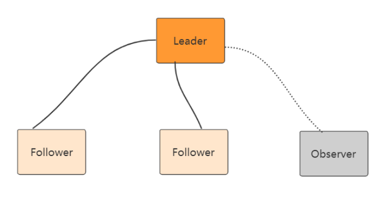
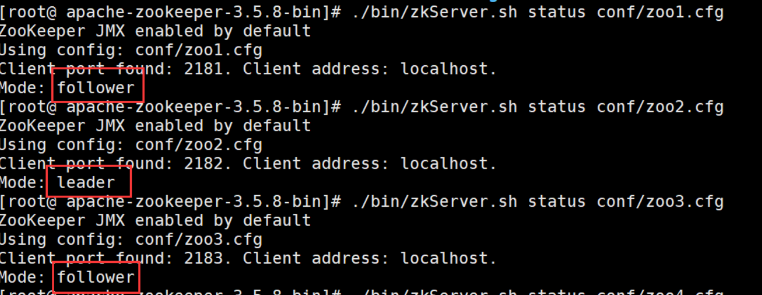
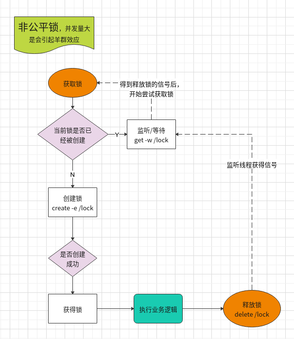
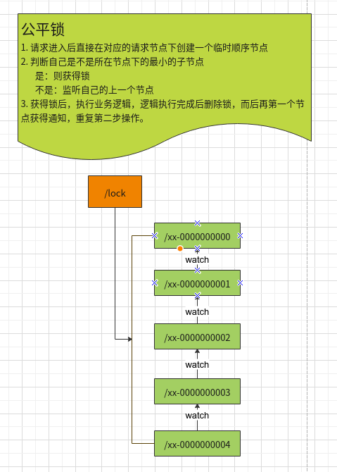
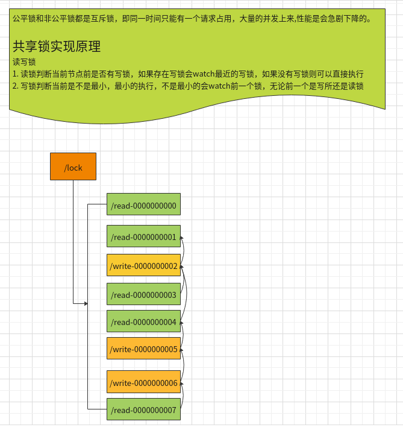

Zookeeper 集群模式一共有三种类型的角色
Leader: 处理所有的事务请求（写请求），可以处理读请求，集群中只能有一个Leader
Follower：只能处理读请求，同时作为 Leader的候选节点，即如果Leader宕机，Follower节点要参与到新的Leader选举中，有可能成为新的Leader节点。
Observer：只能处理读请求。不能参与选举

Zookeeper集群模式安装
本例搭建的是伪集群模式，即一台机器上启动四个Zookeeper实例组成集群，真正的集群模式无非就是实例IP地址不同，搭建方法没有区别
配置JAVA环境，检验环境：保证是
jdk7及以上即可1
java -version
下载并解压Zookeeper
1
wget https://mirror.bit.edu.cn/apache/zookeeper/zookeeper-3.5.8/apache-zookeeper-3.5.8-bin.tar.gz tar -zxvf apache-zookeeper-3.5.8-bin.tar.gz cd apache-zookeeper-3.5.8-bin
重命名
zoo_sample.cfg文件1
cp conf/zoo_sample.cfg conf/zoo-1.cfg
修改配置文件
zoo-1.cfg，原配置文件里有的，修改成下面的值，没有的则加上1
2
3
4
5
6
7vim conf/zoo-1.cfg
dataDir=/usr/local/data/zookeeper-1
clientPort=2181
server.1=127.0.0.1:2001:3001:participant// participant 可以不用写，默认就是participant
server.2=127.0.0.1:2002:3002:participant
server.3=127.0.0.1:2003:3003:participant
server.4=127.0.0.1:2004:3004:observer配置说明
tickTime：用于配置Zookeeper中最小时间单位的长度，很多运行时的时间间隔都是使用tickTime的倍数来表示的。initLimit：该参数用于配置Leader服务器等待Follower启动，并完成数据同步的时间。Follower服务器再启动过程中，会与Leader建立连接并完成数据的同步，从而确定自己对外提供服务的起始状态。Leader服务器允许Follower再initLimit时间内完成这个工作。syncLimit：Leader与Follower心跳检测的最大延时时间dataDir：顾名思义就是 Zookeeper 保存数据的目录，默认情况下，Zookeeper 将写数据的日志文件也保存在这个目录里。clientPort：这个端口就是客户端连接 Zookeeper 服务器的端口，Zookeeper 会监听这个端口，接受客户端的访问请求。server.A=B：C：D：E其中 A 是一个数字，表示这个是第几号服务器；B 是这个服务器的 IP 地址；C 表示的是这个服务器与集群中的 Leader 服务器交换信息的端口；D 表示的是万一集群中的 Leader 服务器挂了，需要一个端口来重新进行选举，选出一个新的 Leader，而这个端口就是用来执行选举时服务器相互通信的端口。如果是伪集群的配置方式，由于 B 都是一样，所以不同的 Zookeeper 实例通信端口号不能一样，所以要给它们分配不同的端口号。如果需要通过添加不参与集群选举以及事务请求的过半机制的 Observer节点，可以在E的位置，添加observer标识。
再从
zoo-1.cfg复制三个配置文件zoo-2.cfg，zoo-3.cfg和zoo-4.cfg，只需修改dataDir和clientPort不同即可1
2
3
4
5
6
7
8
9
10
11
12cp conf/zoo1.cfg conf/zoo2.cfg
cp conf/zoo1.cfg conf/zoo3.cfg
cp conf/zoo1.cfg conf/zoo4.cfg
vim conf/zoo2.cfg
dataDir=/usr/local/data/zookeeper2
clientPort=2182
vim conf/zoo3.cfg
dataDir=/usr/local/data/zookeeper3
clientPort=2183
vim conf/zoo4.cfg
dataDir=/usr/local/data/zookeeper4
clientPort=2184标识Server ID，创建四个文件夹
/usr/local/data/zookeeper-1，/usr/local/data/zookeeper-2，/usr/local/data/zookeeper-3，/usr/local/data/zookeeper-4，在每个目录中创建文件myid文件，写入当前实例的server id，即1，2，3，41
2
3
4
5
6
7
8
9
10
11
12cd /usr/local/data/zookeeper-1
vim myid
1
cd /usr/local/data/zookeeper-2
vim myid
2
cd /usr/local/data/zookeeper-3
vim myid
3
cd /usr/local/data/zookeeper-4
vim myid
4启动三个Zookeeper实例
1
2
3bin/zkServer.sh start conf/zoo1.cfg
bin/zkServer.sh start conf/zoo2.cfg
bin/zkServer.sh start conf/zoo3.cfg检测集群状态，也可以直接用命令
zkServer.sh status conf/zoo1.cfg进行每台服务的状态查询

1 | bin/zkCli.sh -server ip1:port1,ip2:port2,ip3:port3 |
可以通过 查看/Zookeeper/config 节点数据来查看集群配置
Zookeeper典型使用场景实战
Zookeeper 非公平锁/公平锁/共享锁



Leader 选举在分布式场景中的应用
Spring Cloud Zookeeper注册中心实战

...
...
Copyright 2021 sunfy.top ALL Rights Reserved